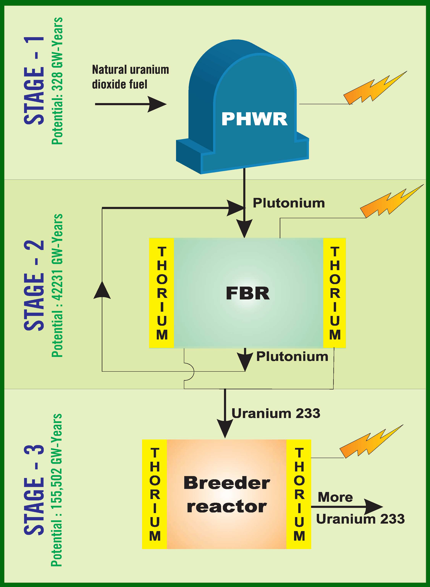

WRONG!
Correct Answer - Secure India's position as an energy-independent nation
By utilizing the large thorium resources found in the monazite rich sands of South India, the Three-stage Nuclear Power Program of India aims to secure the country's position as an energy independent nation, not having to rely on other countries to import fuel for running her nuclear reactors.
The Nuke Quiz #4
Question 4
What is the ultimate focus of the 'Three-Stage Nuclear Power Program' of India?
